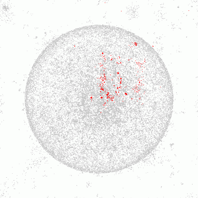

Crear mapas de Travian
Existen muchas páginas externas que recopilan información sobre Travian y la muestran de muy distintas maneras. La mayoría de esas páginas son mapas y/o estadísticas.
Este tutorial se ha escrito para darte algunos consejos sobre cómo programar ese tipo de páginas. Lo primero de todo, este tutorial es sólo un ejemplo para PHP / MySQL (probablemente lo más usado) y debes saber ya cómo funcionan ambos lenguajes, puesto que este tutorial no va a enseñarte a programar.
Tabla de contenidos
- ¿Qué tipo de conocimientos previos necesito?
- ¿Qué necesita tener mi servidor/página web?
- ¿De dónde obtengo los datos?
- ¿Qué formato tienen los datos?
- ¿Qué tipo de información puedo obtener?
- ¿Cómo transfiero la información a mi servidor?
- Ejemplo: Mapa de alianza estático
¿Qué tipo de conocimientos previos necesito?
Debes tener un lenguaje de programación seguro y utilizable en web. Además, este tutorial requiere conocimientos de bases de datos SQL a tu elección.
¿Qué necesita tener mi servidor/página web?
Una combinación muy popular es PHP con MySQL, de cualquier forma, debes tener en cuenta que muchos de los hostings de PHP corren en modo seguro. Esto imposibilita la actualización automática de los datos de forma eficiente, aunque el PHP está lejos de estar limitado en esto.
¿Por qué no funciona en modo seguro?- los comandos directos del sistema vía system() están desactivados
- se previene el acceso a archivos borrados
Puedes leer más sobre esto en la sección "¿Cómo transfiero la información a mi servidor?".
¿De dónde obtengo los datos?
Como usar bots o scripts en el juego es ilegal, debe haber una manera diferente de obtener la información. Travian Games GmbH ofrece los SQL-Dumps actualizados de cada servidor, que ofrecen información básica de cada aldea en el servidor concreto.
Dicho archivo es actualizado todos los días sobre las 7 de la mañana (gmt+1) y está disponible en dos versiones diferentes: sin comprimir (extensión .sql) o comprimido (extensión .sql.gz)
El nombre del archivo depende del idioma del servidor. Todos los servidores alemanes usan el nombre "karte.sql[.gz]" mientras el resto de servidores usa "map.sql[.gz]".
El archivo se puede encontrar en el directorio raíz del servidor.
Ejemplos:- http://www.travian.org/karte.sql
- http://welt1.travian.de/karte.sql.gz
- http://s1.travian.net/map.sql
- http://speed.travian.net/map.sql.gz
¿Qué formato tienen los datos?
Como ya hemos mencionado antes, los archivos son datos SQL, por lo tanto no contienen otra cosa que no sean comandos de insercción en SQL. Es importante tener en cuenta que no se utilizan insercciones avanzadas pero que hay una insercción por aldea (si se utilizaran insercciones avanzadas, se podrían recoger varias aldeas en una sola insercción).
La V2 de los servidores de Travian (antigua versión) usaba el estándar ANSI en los archivos. Hoy en día, todos los datos usan el estándar UTF-8.
Si quieres crear la tabla con los datos del juego, puedes utilizar el siguiente fragmento de código SQL:
CREATE TABLE `x_world` ( `id` int(9) unsigned NOT NULL default '0', `x` smallint(3) NOT NULL default '0', `y` smallint(3) NOT NULL default '0', `tid` tinyint(1) unsigned NOT NULL default '0', `vid` int(9) unsigned NOT NULL default '0', `village` varchar(20) NOT NULL default '', `uid` int(9) NOT NULL default '0', `player` varchar(20) NOT NULL default '', `aid` int(9) unsigned NOT NULL default '0', `alliance` varchar(8) NOT NULL default '', `population` smallint(5) unsigned NOT NULL default '0', UNIQUE KEY `id` (`id`) );
¿Qué tipo de información puedo obtener?
Veamos qué es cada columna:
| Columna | Explicación |
|---|---|
| id | Número de la casilla en el mapa de la aldea, empieza en la esquina superior izquierda (-400|400) y termina en la esquina inferior derecha (400|-400) |
| x | Coordenada x |
| y | Coordenada y |
| tid | Número de la raza. 1 = Romana, 2 = Germana, 3 = Gala, 4 = Naturaleza y 5 = Natares |
| vid | Número de la aldea |
| village | Nombre de la aldea |
| uid | Número del jugador, también conocido como User-ID (o ID de usuario) |
| player | Nombre del jugador |
| aid | Número de la alianza |
| alliance | Nombre de la alianza |
| population | El número de habitantes de la aldea |
Importante:¡Los valores ofensivo y defensivo no están disponibles!
¿Cómo transfiero la información a mi servidor?
Hacer esto manualmente no debería ser mucho problema en la mayoría de los casos: se trata únicamente de descargarse el archivo de datos más reciente e importarlo en la base de datos propia usando, por ejemplo, PHPmyAdmin.
¿Se podría hacer esto automáticamente todos los días? Lo ideal sería algo parecido a esto:
- Un proceso Cron comienza la actualización del script
- Un gestor de descargas descarga el fichero
- Un cliente de DBs (bases de datos) importa el fichero en la base de datos
Este script de actualización no puede ser un script en PHP o algo similar utilizado para generar una página web, si no que tendría que ser un shell-script que corra en la consola del servidor. Desgraciadamente no todos los usuarios tienen acceso al shell del servidor donde está alojada su página web.
Normalmente esto no sería un problema puesto que se pueden correr estos procesos con el comando system() en un script en PHP normal. Pero como la mayoría de proveedores corren el modo seguro por motivos de seguridad y, por ejemplo, el comando system() está deshabilitado en este modo, la única opción es utilizar PHP para todo.
La mayoría de proveedores limitan el tiempo de ejecución de scripts entre 10 y 30 segundos (bastante poco tiempo para descargar la información de todo el servidor). Además, el acceso a archivos y servicios externos al servidor puede estar prohibido y pueden impedir, incluso, el acceso a los archivos.
Para ser más explícitos: No te plantees utilizar un hosting gratuito si realmente estás considerando escribir una herramienta para crear mapas.
Bien, si finalmente has sido capaz de deshacerte del modo seguro o de conseguir acceso al shell del servidor de tu web, entonces podemos continuar.
El siguiente ejemplo está escrito en PHP y MySQL (necesitarás un servidor y cliente de la línea de comandos "mysql"). También necesitarás wget (herramienta en línea de descarga de comandos).
Para ser más claros, se ha omitido parte de la gestión de errores.
Para poder ejecutar el script, debes crear una carpeta llamada "data" en el directorio donde se encuentre el script. Por supuesto, debes dar permisos de escritura al usuario de la web. Adicionalmente, tendrás que crear la base de datos con la tabla "x_world" como se ha descrito anteriormente. Después escribe la información necesaria en la parte superior de la secuencia de comandos.
Código fuente del script de actualización
<?php
// Preferences
$mysqlhost = 'localhost';
$mysqluser = 'user';
$mysqlpass = 'password';
$mysqldb = 'database';
// Create database connection and select database
$db = @mysql_connect($mysqlhost, $mysqluser, $mysqlpass) OR die('Can not connect to DB-Server!');
$db_select = @mysql_select_db($mysqldb) OR die('Can not select DB!');
// load the map.sql via system command using "wget" into the folder data/
// IMPORTANT: PHP has to be allowed to write into that folder, if necessary set the needed rights!
system('wget http://s1.travian.com/map.sql -O data/tmp.sql');
// Check whether the file has been downloaded and is larger than zero bytes
if (file_exists('data/tmp.sql') AND filesize('data/tmp.sql')) {
// Empty table
$query = 'TRUNCATE TABLE x_world';
$result = @mysql_query($query) OR die('Can not clear table x_world!');
// Exceute map.sql using the programme "mysql"
// IMPORTANT: The charset "latin1" has to be used for T2 game worlds (if there should be any left with that version)
system('mysql --host='.$mysqlhost.' --user='.$mysqluser.' --password='.$mysqlpass.' --default-character-set=utf8 '.$mysqldb.' < data/tmp.sql');
echo 'Update finished!';
} else {
echo 'Failed downloading map.sql or file is empty!';
}
// In case the temporary file exists it will be deleted
if (file_exists('data/tmp.sql')) {
unlink('data/tmp.sql');
}
// Close database connection
@mysql_close($db);
?> Ejemplo: Mapa de alianza estático
El siguiente script muestra cómo crear un sencillo mapa de alianza. En la parte superior, simplemente introduce la información de acceso y el ID de la alianza a destacar. Con dicha información, el script generará un mapa con todas las aldeas del servidor y resaltará las de la alianza en cuestión.
Para ejecutar completa y satisfactoriamente este script, se necesitán las siguientes extensiones de PHP: GD-Lib y funciones de imagen así como la base de datos MySQL y la tabla descrita anteriormente en el script de actualización.
Recuerde no ejecutar este script muy a menudo, dado que consume muchos recursos. Por este motivo no es conveniente poner directamente este script en una página web accesible/visible, si no colocarlo en otro lugar y dejar que actualice el archivo una vez al día. Para hacer esto, basta leer los demás parámetros de la función imagepng().
Código del script para crear un mapa de alianza
<?php
// aid of the highlighted Alliance
$marked_aid = 2403;
// Preferences
$mysqlhost = 'localhost';
$mysqluser = 'user';
$mysqlpass = 'password';
$mysqldb = 'database';
// Create database connection and select database
$db = @mysql_connect($mysqlhost, $mysqluser, $mysqlpass) OR die('Can not connect to DB-Server!');
$db_select = @mysql_select_db($mysqldb) OR die('Can not select DB!');
// Create image: Map goes from -400 to 400
// -> sums up tp 2*400+1 (+1 due to the 0 in the center)
$image = imagecreate(801, 801);
// Choose the colors of background, normal village and highlighted alliance
$color_background = imagecolorallocate($image, 255, 255, 255);
$color_normal = imagecolorallocate($image, 200, 200, 200);
$color_marked = imagecolorallocate($image, 255, 0, 0);
// Fill images background with chosen color
imagefill($image, 0, 0, $color_background);
// Select ALL villages from the DB and order by ascending ID
// (Fields are numbered from top left to bottom right)
$query = 'SELECT x, y, aid FROM x_world ORDER BY id ASC';
$result = @mysql_query($query) OR die('Can not select villages from table x_world!');
// Check whether there any villages at all
if (mysql_num_rows($result)) {
// Select first village
$row = @mysql_fetch_assoc($result);
// These variables save the location on which we are currently drawing
$x_pointer = 0;
$y_pointer = 0;
// Outer loop for the Y-coordinates
for($y=400; $y >= -400; $y--) {
// Inner loop for the X-coordinates
for ($x=-400; $x <= 400; $x++) {
// Once we reached the coordinates matching the current record selected from the DB:
if ($row['x'] == $x AND $row['y'] == $y) {
// Selecting the village color depending on the aid
if ($row['aid'] == $marked_aid) {
$color = $color_marked;
} else {
$color = $color_normal;
}
// Drawing the village with the selected color
imagefilledrectangle($image, $x_pointer, $y_pointer, ($x_pointer + 1), ($y_pointer + 1), $color);
// Select next record
$row = @mysql_fetch_assoc($result);
}
// Increase pointer for X-coordinate
$x_pointer++;
}
// Increase pointer for Y-coordinate
$y_pointer++;
// We reached the end of a line and have to set the X-pointer to 0 again
$x_pointer = 0;
}
}
// Select the HTTP-Header for the selected filetype
header("Content-Type: image/png");
// Generate image and print it
imagepng($image);
?>